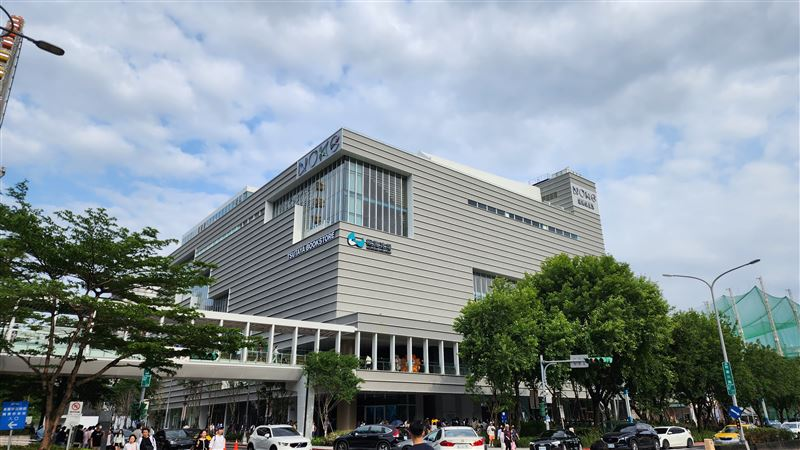

POS 與門市流程
規劃前台操作、門市流程與實際使用情境，讓系統能進入真實營運。
關注現場可用性、例外處理與資料一致性。
I'm
熟悉多維度的網站和零售產品經理。
我的零售科技經驗涵蓋商場 POS 上線、會員遷移、電商營運、電子發票、第三方 API 串接與 O2O 流程設計。
我最擅長把商務需求拆成欄位、流程、例外情境與上線節奏，並協調開發、供應商與門市營運團隊。
運營層面會遇到各種奇奇怪怪的顧客和問題，在最前線的夥伴面前，我能夠提供穩定、可靠的問題和狀況排除，作為大家最忠實的後盾。
月活顧客的系統管理
Zoho/CRM/鼎新ERP/Odoo/Salesforce 多款主流系統操作和整合經驗
團購、電商、O2O 與通路營運的交付經驗
經驗豐富，商務洽談/教育訓練服務人數
以 OMO、POS、會員與通路整合為核心的產品交付能力。
規劃前台操作、門市流程與實際使用情境，讓系統能進入真實營運。
關注現場可用性、例外處理與資料一致性。
具團購系統、電商網站與線上線下整合營運經驗。
能從產品規劃一路走到實際銷售通路啟動。
串接 CRM、會員、電子發票與第三方服務，穩定資料流與上線節奏。
對跨系統欄位對應與 migration 有實戰經驗。
理解網站前端、內容呈現與營運方需求，能當技術與商務橋樑。
適合多方利害關係人與供應商並行的專案場景。
以 POS、電商、O2O 與通路拓展相關專案為主。

1 個月內迅速導入上線，完成網站、POS、會員與庫存流程整合。

輔助專案技術前期串接和問題排除，支援大型商場多業態營運。

高端電風扇品牌網站活化和渠道拓展，支援產品商業化與線上銷售。

客製化市面上沒有的瓦斯行專用 POS 系統，並提供線上購物功能。
依時間序呈現職稱、期間、地點與關鍵成果。
職位：SEO 專案經理｜產業：B2B 製造 / 成長系統｜範圍：20+ 品牌 SEO、內容營運、CRM funnel
職位：技術銷售 / IT產品經理
職位：行銷經理｜範圍：團購 EC、O2O、官網與轉化流程｜型態：專案 / 並行交付
職位：IT 經理
職位：產品經理｜產業：IoT / 電商通路｜範圍：產品上架、內容素材、網路行銷
用零售科技 PM 關鍵字呈現，並對應到實際產品與上線場景。
打造銷售前端和管理後端的資訊打通呈現順暢的內部控管流程。
各種網路零售商線上下取貨架構、物流、金流串接。
來自 POS、CRM、ERP 與第三方 API 串接的實際上線經驗。
用於規格整理、上線節奏安排與商務需求對齊，串接門市與數位團隊。
歡迎交流 POS、OMO、電商平台、會員系統與整合型產品機會。